RAM or random access memory is a key component of any computer. It can be used to read and write data to a particular address. The program counter is used to keep track of the instruction the computer is executing.
Part 1 and 2 - Building the RAM and the MAR
These are essentially built together which is why the parts are combined.
RAM schematic: 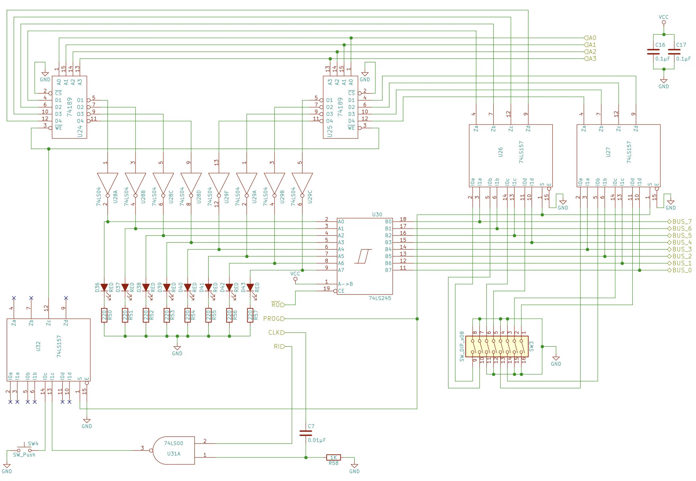
MAR schematic: 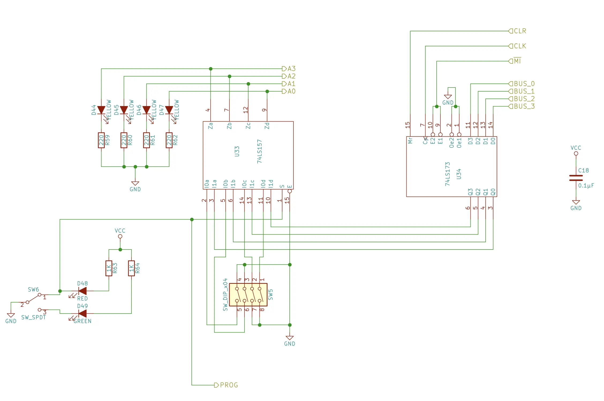
And after lots and lots of wiring and troubleshooting here it is!
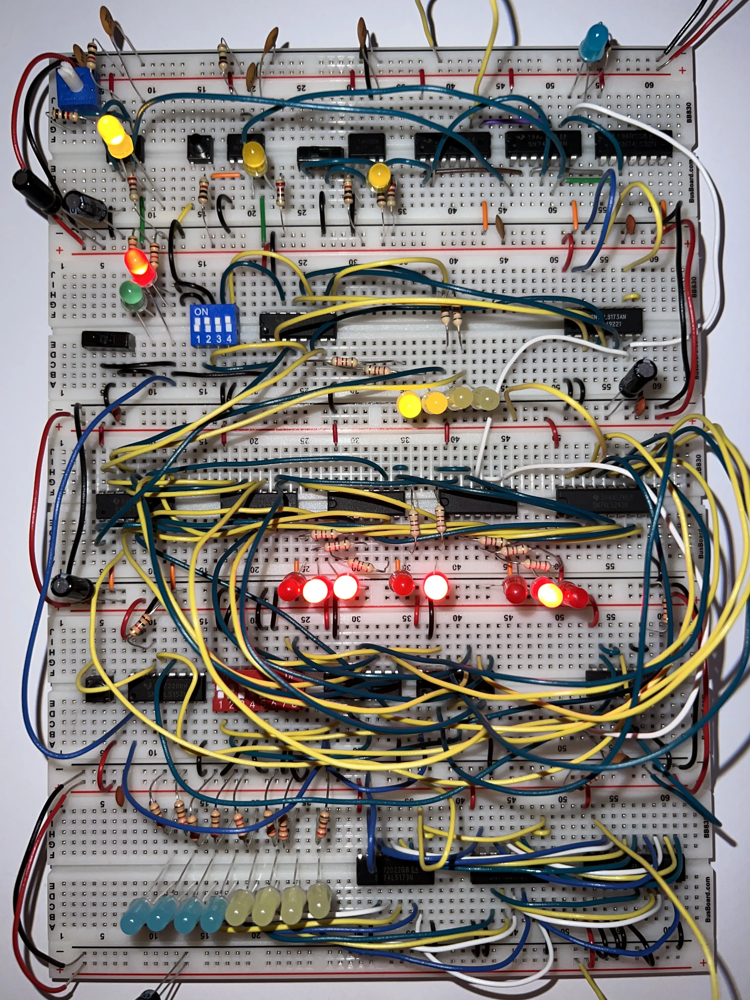
Troubleshooting There was one issue I resolved, and one that I had read about which I avoided. The first was the RC circuit on the RAM module. The idea is that we want the RAM to store data from the bus only on the rising edge of the clock, if we just connected the AND gate to the clock we would be writing the entire time the clock was active. The solution is to connect the clock to a capacitor, and the capacitor to the first pin of the AND gate. However, this can cause several issues as when the RC circuit discharges it can cause bounce on the clock line. To avoid this issue you can put a buffer between the clock line and the RC circuit. I did this by passing it through the 74LS04 inverter.
The second issue occurred when switching between program mode and run mode. Occasionally this would cause the contents of the RAM to be written to, it turns out this is due to gate delay and the way the pins are initially configured on the 74LS157 on the bottom left of the RAM module schematic. Because the pins are initially set high it causes a 0 to be outputted occasionally from the 74LS157 which of course pulls the WE low causing the RAM to write whatever is on the bus. The solution is to invert the inputs to the 74LS157 and have their initial state be a 0. After inverting the inputs this issue was fixed. For a detailed breakdown see this video.
How This works
Let's start with the MAR (memory address register), this is used to select which memory address in the RAM we want to write to or read from. It consists of the 74LS173 4-bit D register which I went over in the last post. Here it is used to read and store data from the bus and pass that data onto the 74LS157 quad 2-line to 1-line data selectors/multiplexers.
The 74LS157 is used so that we can put the MAR and RAM in program mode and use the dip switches to select which address of the RAM to write to, or we can put it in run mode and get the inputs from the bus.
As you can see when we have the select line high it only allows the input from A to pass through, and when we have the select line low it only allows the input from B to pass through. So what is really happening is that when we put the RAM and MAR into program mode all we are doing is telling the 74LS157 to only allow the bits from the dip switches to pass through. When we put the RAM and MAR into run mode all we are doing is telling the 74LS157 to only allow the data from the bus to pass through. We do this by switching the switch on the MAR breadboard to either high or low.
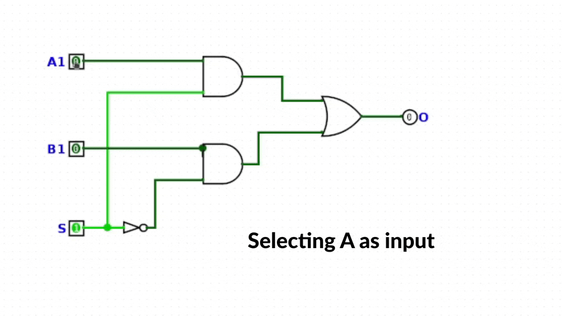
Okay now let's take a look at the RAM, the core components of the RAM are three 74LS157s quad 2-line to 1-line data selectors/multiplexers, one 74LS245 8-bit bus transceiver, two 74F189 64-bit RAM. The 74LS245 is used to put data onto the bus, two of the 74LS157s are used to select between the bus and dip switch inputs. The last 74LS157 on the bottom left of the schematic is used to decide whether the inputs from the push button or the RI (RAM in) signal pass through. These two inputs tell the RAM when to read and store the contents that either come from the bus, or the dip switch.
Now let's take a look at the 74F189 64-bit RAM. The first thing to note is that the outputs are inverted, which is why the outputs are going to the inverters, and the output from the inverters is going to the LS74245. Now let's take a deeper look into the overall function of the RAM.
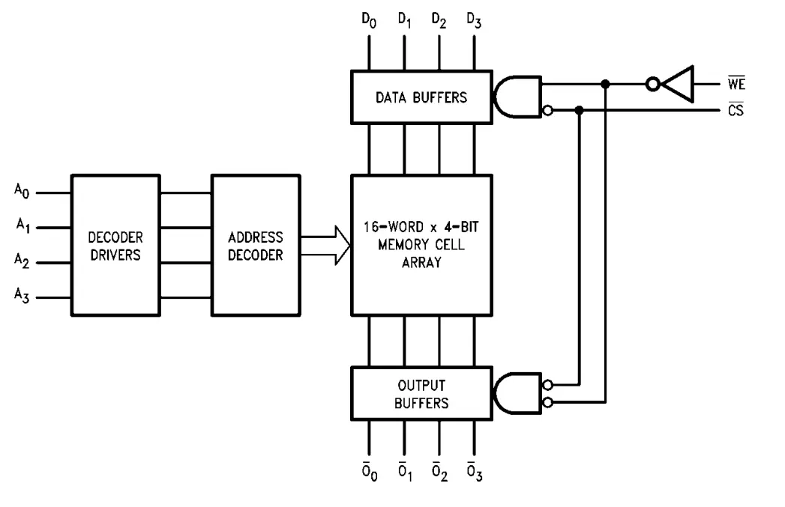
Let's start with the core memory cell array, it is 16-words where each word is 4 bits which essentially means we have 16 rows to select from, hence the 4 address inputs. Now in theory we could have 16 address inputs, one for each row, and select from that. However, as you can imagine that would not be very convenient, so instead we can use an address decoder to go from these 4 inputs to controlling which of these 16 rows we want to access. Here is something that accomplishes this.
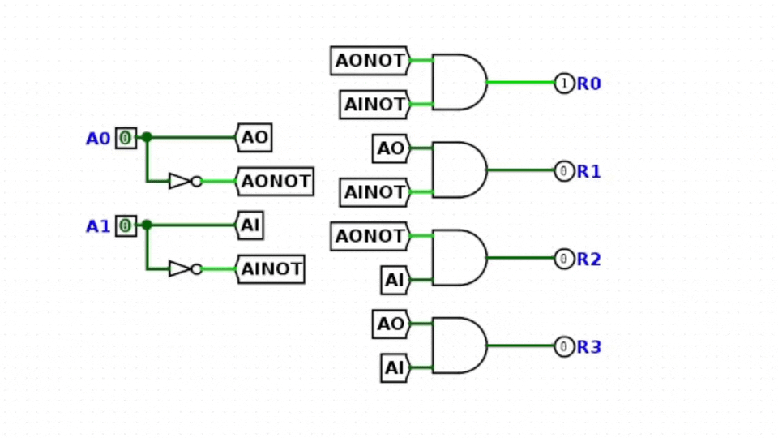
So that is how we can use 2 bits to select 4 address inputs, and the idea is the same with any number of bits. So now we have a way of selecting which address (row) we want to access, now how do we decide if we want to write or read data from that address. This is where we can take a look at the data buffers and output buffers. The data buffers have two inputs that enable data to pass through, a chip select, and a write enable, in our case the chip select is always pulled low so we can always read and write the RAM depending on if we set the write enable.
If the write enable is high (off) then we are just reading from whatever memory address we set. If the write enable is pulled low then we write the data to the memory address we have selected. So if we are in program mode and push the push button we write what we have set on the dip switches to the memory address we have set on the MAR.
Now what about that 16-word x 4-bit memory cell array. First, this is SRAM, or static RAM, what that means is that unlike DRAM (dynamic RAM) we don't have to do a constant refresh on the data in the RAM to maintain the contents. This means each memory cell is more expensive to make than DRAM, but it also means we don't have to build the circuit that performs this refresh operation. It also provides a speed benefit, but that is not important for our application.
Regardless of whether we are using DRAM or SRAM we can look at the individual memory cells (a single bit) as a block that has input and output pins, an enable pin, and a write enable pin. The address line turns on a row of memory cells to enable, at this point we can read or write that row of memory cells. If we want to write some data we pass in the data we want to write to the data buffer and set the write enable low. After we can read from that row by setting the write enable high, it's that simple.
Here is a simulation of this, one thing to point out is that data in and out can share the same line, but in logisim this was causing conflicts so I made them separate lines. Also, there are only two words so it might seem ridiculous to have an address decoder for this, and it is, but for educational purposes it gets the point across.
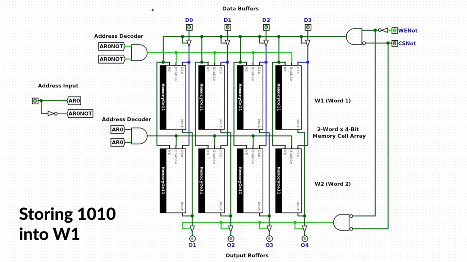
Part 3 - Building the Program Counter
Time to build the program counter! The program counter is used to keep track of which instruction our program is on. We will also be able to store a value into it, which allows us to jump to a particular instruction. As always here is the schematic.
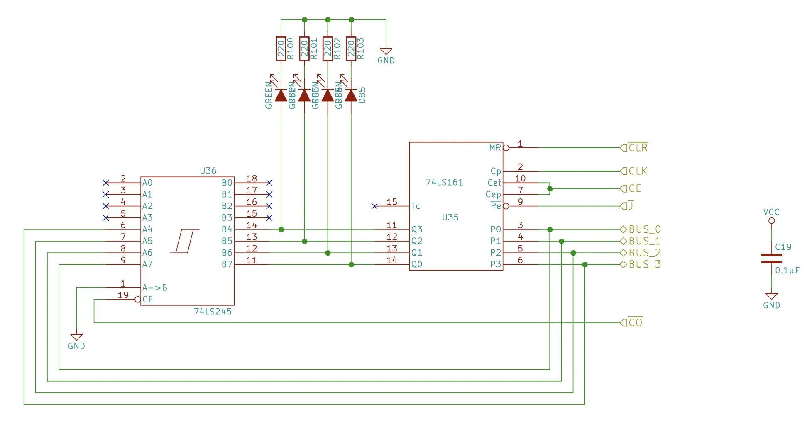
Here it is! (I accidently didn't connect pin 1 of the LS245 to GND here)
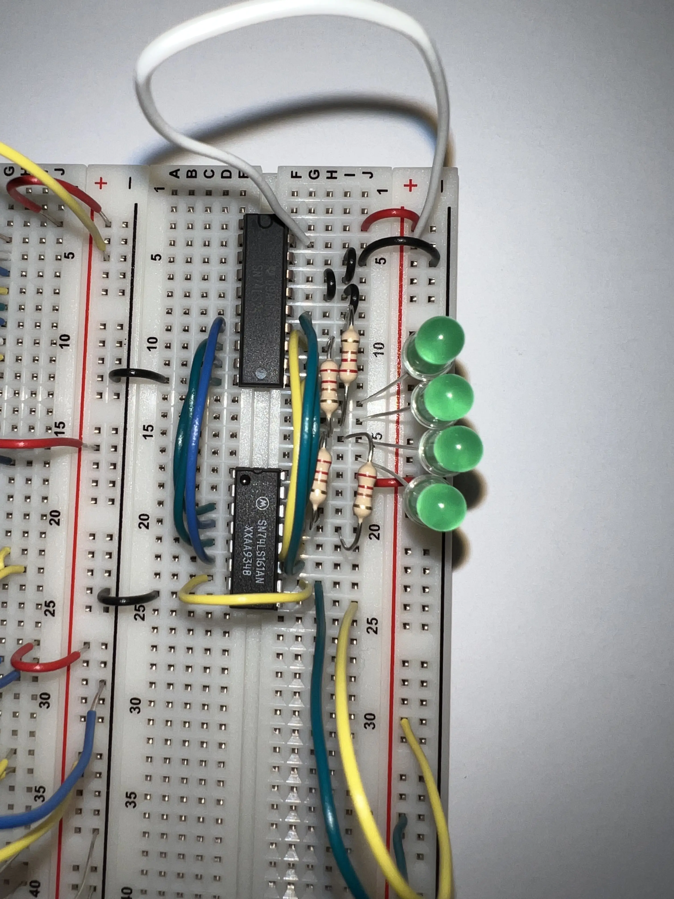
How This works
There are just two major components, the first is the 74LS245 8-bit bus transceiver, and 74LS161 synchronous 4-bit counter. The 74LS245 is used to put the contents of the PC onto the bus. Let's take a closer look at the 74LS161, at the heart of this component is the JK flip-flop. With the JK flip-flop you can set Q and $\overset{\_}{Q}$ by setting J and K high respectively, but when you set both J and K high Q and $\overset{\_}{Q}$ toggle.
This configuration is known as a master-slave JK flip-flop. This is used to avoid racing, which occurs when the timing pulse is not extremely short. To see this in action you can check out this video. The idea behind this configuration is that when the slave stage (the last pair of NAND gates) responds to the falling edge of the clock signal their outputs (Q and QNot) don't affect the master stage (2nd pair of NAND gates) until the rising edge of the clock, avoiding racing.
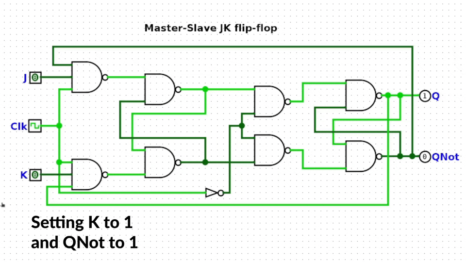
The other nice property about this configuration is that you can join them together to make a binary counter. The reason is that each of the outputs is half the speed of the clock pulse, when you arrange it like this it creates a binary counter. Here I cut the video after this counts to 8. This is great because now we can keep track of which instruction we are on based on the clock.
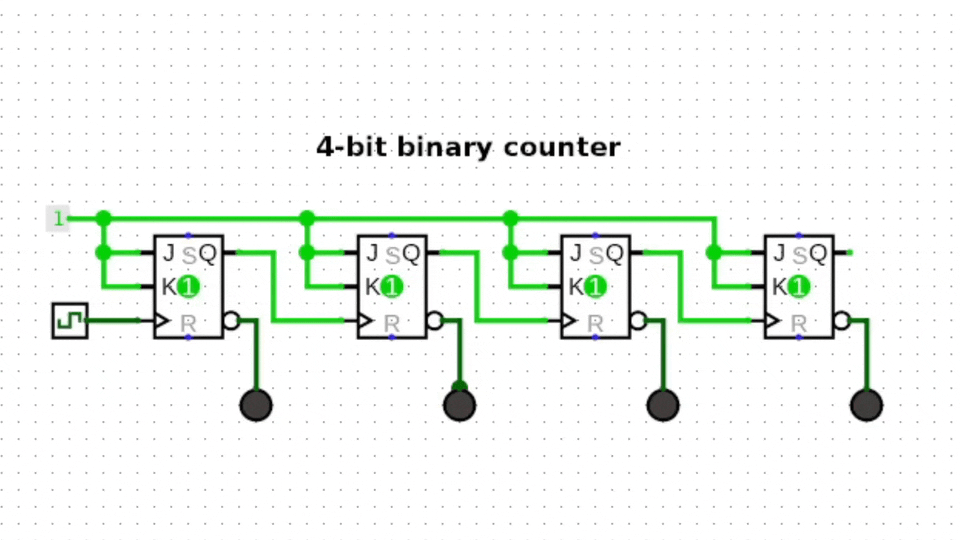
However, the 74LS161 provides more than just a simple counter like this. It provides a way to load data onto our counter, which is crucial for the jump instruction. A clear line for clearing the data on the counter. And a way to enable when to increment the counter. But these are just built around the JK flip-flops. You can see the full logic diagram here.
That wraps up the RAM and Program Counter, in the next part we will make the Output and Control Logic finishing the project!